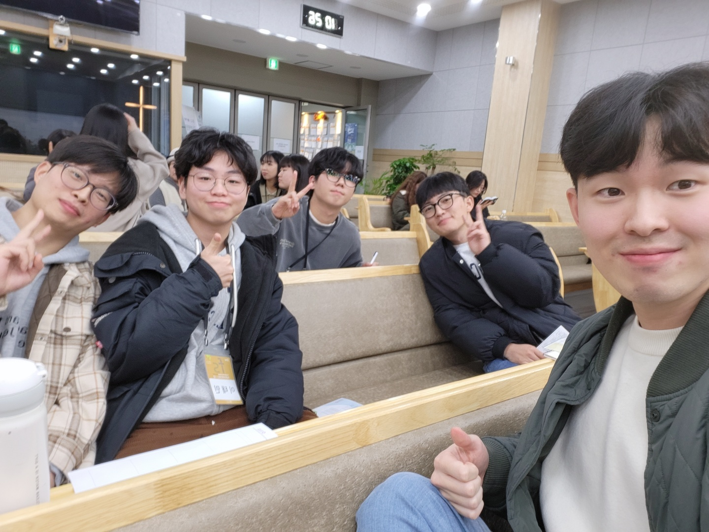

근황
안녕하세요.
오랜만에 기도편지를 적습니다. 벌써 한해의 끝이 보이는 12월이네요. 저에게는 참 시간이 빠르게 흘러 연말이 왔는데, 중보자님은 한 해를 어떻게 보내셨는지 궁금하네요! ㅎㅎ
저는 한동대 비전선교단 동아리원들, FS훈련생들과 함께 시간을 보냈습니다. 동아리와 훈련을 섬기며 훈련생들 한 사람 한 사람을 위해 기도하고 받은 마음과 말씀을 나눠주며 섬기는 시간 가운데, 동일한 말씀을 다른 상황에 처해있는 저에게도 조명하시고 말씀하시며 저를 더욱 섬겨주시는 하나님을 만나는 감사한 시간을 보내고 있습니다.
 <23-2학기 동아리원들과 함께>
<23-2학기 동아리원들과 함께>
다들 아시겠지만 이스라앨-하마스 전쟁이 지속되고 있는 상황입니다. 제가 평소에 가던 지역은 팔레스타인 서안지구로, 전쟁에 직접적인 피해를 보고 있는 곳은 아닙니다. 하지만 복음을 영접한 팔레스타인 a친구에게 연락을 했는데, 생각보다 상황이 좋지 않은 상황이었습니다. a친구는 자녀가 3명이 있는데 전쟁의 여파로, 서안지구도 경제 상황이 어려워 자녀들에게 밥도 제대로 주지 못하는 시간을 보내어 힘들어하고 있었습니다. 저를 정말 좋아해 주고 친한 친구이기에, 소식을 들으며 정말 마음이 아프더라고요. 함께 이 민족을 위해서 기도해주세요.
a친구와 이야기 하기 전까지는, 섬기던 지역에 전쟁이 발생했음에도 불구하고 저는 부끄러울 만큼 마음고생 없이 시간을 보낸 것 같습니다. 나와는 관계없는 사람이라고 기도조차 간절히 하지 않았던 저이지만, 수많은 사람들의 죽음보다 친한 친구 한 명에게 피해가 가는 소식이 오히려 제 마음을 아프게 만드는, 참으로 내 중심적인 마음이 있음을 봅니다. 이스라앨 팔레스타인 민족을 섬기고 있음에도, 이렇게 사랑 없고 부족한 저의 모습이기에, 중보자님의 기도가 더욱 필요합니다. 나의 어떠함에 근거한 것이 아닌 주님의 약속과 사랑에 근거해서, 저를 끝내 하나님만 따르는 선교사로 세우실 주님을 향한 소망을 놓지 않을 수 있도록 함께 기도 부탁드립니다.

<같은 조 훈련생들과 함께>
 <33기 훈련생들 졸업캠프에서>
<33기 훈련생들 졸업캠프에서>